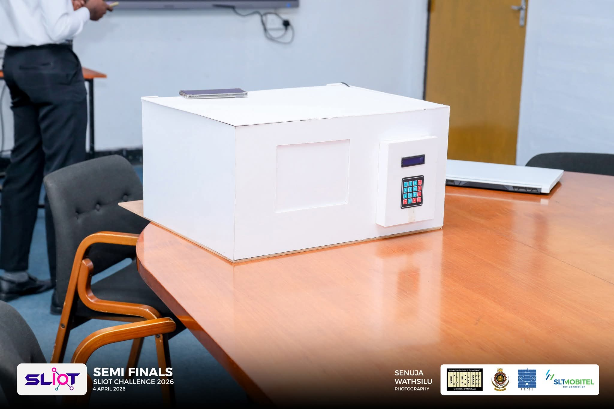
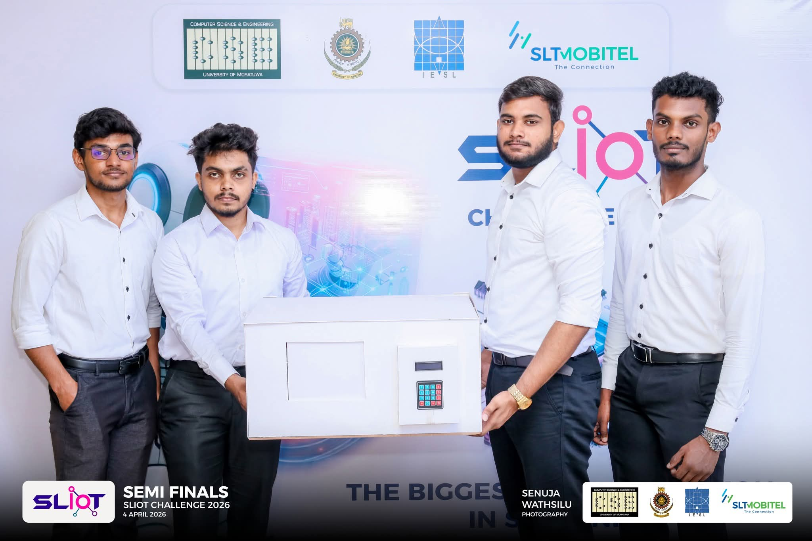
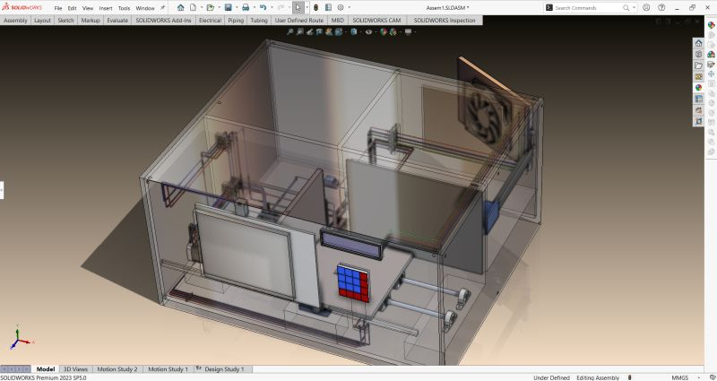
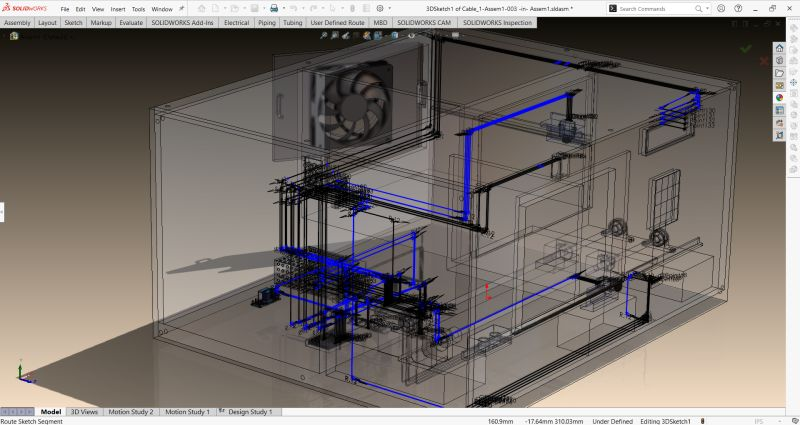
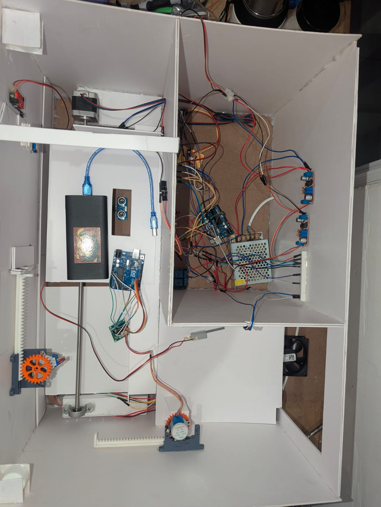
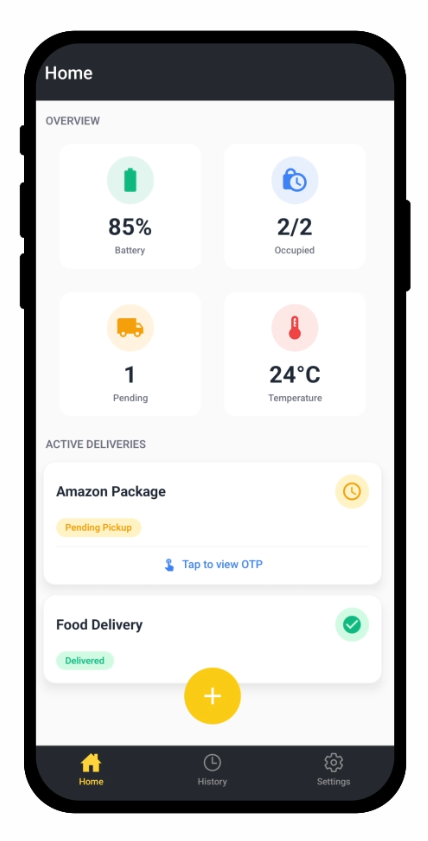
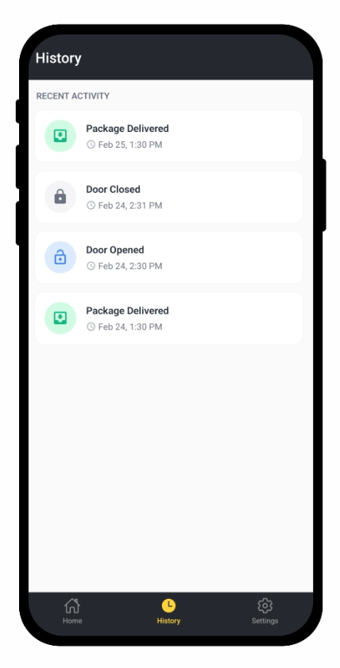

LockerLink: The Autonomous Last-Mile AIoT Node







Overview
Recognized as a semifinalist project in the SLIOT Challenge 2026, LockerLink was engineered to resolve the inefficiencies and carbon footprint associated with the "redelivery loop" in urban logistics. It functions as a retrofittable, highly secure smart parcel box that acts as an unmanned receptionist for residential deliveries, bridging a digital IoT concept with robust physical mechanics.
Mechanical Design & Kinematics
Unlike passive delivery boxes, LockerLink features a complex multi-order trap-door mechanism that allows multiple couriers to deposit packages securely throughout the day without ever gaining access to previously delivered items. The complete mechanical architecture was conceptualized and drafted using SolidWorks to ensure precise tolerances. The system's kinematics utilize heavy-duty Nema 17 and 28BYJ-48 stepper motors, incorporating lead screw and rack-and-pinion mechanisms to translate rotational motion into the high-torque linear movements required for the trap-door security.
Sensor Integration & Embedded Control
The system is governed by a distributed architecture powered by an Arduino Uno and ESP32. To map the real-time physical state of the doors and package bays, strategically mounted IR sensors, ultrasonic sensors, and limit switches create a robust feedback loop. This embedded hardware syncs seamlessly with a dedicated mobile app, utilizing a dynamic One-Time Password (OTP) system to grant authorized access to couriers while giving the user complete remote visibility.
Environmental & Power Management
To protect sensitive or perishable deliveries, LockerLink actively regulates its internal temperature using a DHT11 sensor paired with a 12V DC cooling fan. A 12V/5A SMPS manages the power distribution, ensuring reliable, continuous power across all motors, sensors, and wireless communication modules.
Outcome
Taking this ambitious project from a SolidWorks concept to a resilient, moving prototype was a rigorous exercise in seamless electromechanical integration. It provided deep practical experience in kinematic planning, 3D CAD modeling, and flawlessly executing digital software logic through complex physical hardware.